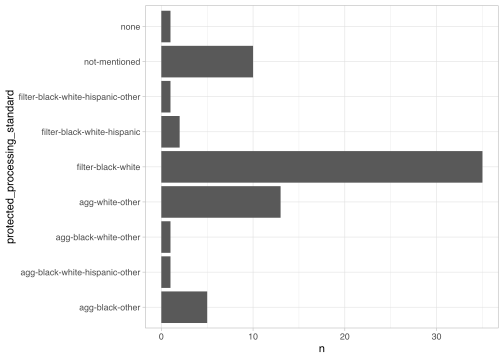

source("../R/setup.R")Section 4: Omitted Populations
Load Data
papers_raw <- load_papers()Rows: 280 Columns: 14
── Column specification ────────────────────────────────────────────────────────
Delimiter: ","
chr (14): new_dataset_id, name, paper, org_id, task_id, task, data_spec, STA...
ℹ Use `spec()` to retrieve the full column specification for this data.
ℹ Specify the column types or set `show_col_types = FALSE` to quiet this message.Prepare & Clean Data
Look only at COMPAS data.
papers_compas_raw <- papers_raw %>%
filter(org_id == "ORG-040")Aggregate the field protected_processing_standard.
recode_processing <- function (processing) {
processing %>%
# Rename "process" to "agg(regate)"
str_replace_all("process", "agg")
}papers_compas <- papers_compas_raw %>%
mutate(
protected_processing_standard = protected_processing_standard %>%
case_match(
"filter-black-white*" ~ "filter-black-white",
"unclear" ~ "not-mentioned",
.default = protected_processing_standard
) %>%
recode_processing()
)levels_before <- c()
levels_after <- c("not-mentioned", "none")
processing_strategies_levels <- c(
levels_before,
papers_compas$protected_processing_standard %>%
unique() %>%
sort() %>%
.[!. %in% c(levels_before, levels_after)],
levels_after
)
order_processing_strategies <- function(processing_column) {
processing_column %>%
factor(
levels = processing_strategies_levels[
# Only use levels that are in the column
processing_strategies_levels %in% processing_column
]
)
}
rm(levels_before, levels_after)papers_compas <- papers_compas %>%
mutate(
protected_processing_standard = order_processing_strategies(protected_processing_standard)
)Analysis
Usage in Papers
Check the number of papers using COMPAS we annotated.
papers_compas %>% nrow()[1] 69In raw numbers.
papers_compas %>%
count(protected_processing_standard, sort = T) %>%
mutate(
frac = n / sum(n),
frac_other = 1 - frac
)# A tibble: 9 × 4
protected_processing_standard n frac frac_other
<fct> <int> <dbl> <dbl>
1 filter-black-white 35 0.507 0.493
2 agg-white-other 13 0.188 0.812
3 not-mentioned 10 0.145 0.855
4 agg-black-other 5 0.0725 0.928
5 filter-black-white-hispanic 2 0.0290 0.971
6 agg-black-white-hispanic-other 1 0.0145 0.986
7 agg-black-white-other 1 0.0145 0.986
8 filter-black-white-hispanic-other 1 0.0145 0.986
9 none 1 0.0145 0.986Number of usage strategies.
papers_compas %>%
count(protected_processing_standard) %>%
filter(protected_processing_standard != "not-mentioned") %>%
nrow()[1] 8And visualized:
papers_compas %>%
count(protected_processing_standard) %>%
ggplot(
aes(
x = n,
y = protected_processing_standard
)
) +
geom_col()

processing_standard_levels <- papers_compas$protected_processing_standard %>%
levels()
create_color_scale <- function (labels, filter_substr, colorscale, offset = 2) {
filtered_labels <- labels %>%
str_extract(filter_substr) %>%
na.omit()
max_n <- length(filtered_labels) + offset
colors <- RColorBrewer::brewer.pal(n = max_n, name = colorscale)[(offset + 1):max_n]
names(colors) <- rev(filtered_labels)
return(colors)
}
final_color_scale <- c(
create_color_scale(processing_standard_levels, "none", "Greens"),
create_color_scale(processing_standard_levels, "filter-.*", "Blues"),
create_color_scale(processing_standard_levels, "process-.*", "Reds"),
"not-mentioned" = "#BBBBBB"
)Warning in RColorBrewer::brewer.pal(n = max_n, name = colorscale): minimal value for n is 3, returning requested palette with 3 different levelsfinal_color_scale none filter-black-white-hispanic-other
"#31A354" "#6BAED6"
filter-black-white-hispanic filter-black-white
"#3182BD" "#08519C"
<NA> <NA>
"#DE2D26" "#FC9272"
not-mentioned
"#BBBBBB" extract_processing_categories <- . %>%
str_split_i("-", i = 1) %>%
case_match(
"none" ~ "Full Data",
"filter" ~ "Filter / Discard",
"agg" ~ "Aggregate",
"aggregate" ~ "Aggregate",
"not" ~ "?"
)Prepare data to create a nested donut chart via rawgraphs.io.
protected_processing_standard_counts <- papers_compas %>%
count(protected_processing_standard) %>%
mutate(
processing_category = protected_processing_standard %>%
extract_processing_categories()
) %>%
group_by(processing_category) %>%
mutate(
cat_label_n = paste0(processing_category, "\n", "n = ", sum(n)),
label_n = paste0(protected_processing_standard, "\n", "n = ", n)
) %>%
ungroup() %>%
write_csv(
file.path(data_dir, "intermediate", "protected_processing_standard_counts.csv")
)
protected_processing_standard_counts# A tibble: 9 × 5
protected_processing_standard n processing_category cat_label_n label_n
<fct> <int> <chr> <chr> <chr>
1 agg-black-other 5 Aggregate "Aggregate… "agg-b…
2 agg-black-white-hispanic-other 1 Aggregate "Aggregate… "agg-b…
3 agg-black-white-other 1 Aggregate "Aggregate… "agg-b…
4 agg-white-other 13 Aggregate "Aggregate… "agg-w…
5 filter-black-white 35 Filter / Discard "Filter / … "filte…
6 filter-black-white-hispanic 2 Filter / Discard "Filter / … "filte…
7 filter-black-white-hispanic-oth… 1 Filter / Discard "Filter / … "filte…
8 not-mentioned 10 ? "?\nn = 10" "not-m…
9 none 1 Full Data "Full Data… "none\…papers_compas %>%
count(protected_processing_standard) %>%
ggplot(
aes(
x = 0.5,
y = n,
fill = protected_processing_standard
)
) +
geom_col(width = 0.2) +
xlim(c(0, 0.6)) +
coord_polar(theta = "y") +
theme_void() +
scale_fill_manual(values= final_color_scale)Distribution of Sensitive Attributes / Base Rates
Load actual COMPAS data.
compas_url <- file.path(data_dir, "raw", "compas", "compas-scores-two-years.csv")
compas <- read_csv(compas_url)New names:
Rows: 7214 Columns: 53
── Column specification
──────────────────────────────────────────────────────── Delimiter: "," chr
(19): name, first, last, sex, age_cat, race, c_case_number, c_charge_de... dbl
(19): id, age, juv_fel_count, decile_score...12, juv_misd_count, juv_ot... lgl
(1): violent_recid dttm (2): c_jail_in, c_jail_out date (12):
compas_screening_date, dob, c_offense_date, c_arrest_date, r_offe...
ℹ Use `spec()` to retrieve the full column specification for this data. ℹ
Specify the column types or set `show_col_types = FALSE` to quiet this message.
• `decile_score` -> `decile_score...12`
• `priors_count` -> `priors_count...15`
• `decile_score` -> `decile_score...40`
• `priors_count` -> `priors_count...49`compas# A tibble: 7,214 × 53
id name first last compas_screening_date sex dob age age_cat
<dbl> <chr> <chr> <chr> <date> <chr> <date> <dbl> <chr>
1 1 migue… migu… hern… 2013-08-14 Male 1947-04-18 69 Greate…
2 3 kevon… kevon dixon 2013-01-27 Male 1982-01-22 34 25 - 45
3 4 ed ph… ed philo 2013-04-14 Male 1991-05-14 24 Less t…
4 5 marcu… marcu brown 2013-01-13 Male 1993-01-21 23 Less t…
5 6 bouth… bout… pier… 2013-03-26 Male 1973-01-22 43 25 - 45
6 7 marsh… mars… miles 2013-11-30 Male 1971-08-22 44 25 - 45
7 8 edwar… edwa… ridd… 2014-02-19 Male 1974-07-23 41 25 - 45
8 9 steve… stev… stew… 2013-08-30 Male 1973-02-25 43 25 - 45
9 10 eliza… eliz… thie… 2014-03-16 Fema… 1976-06-03 39 25 - 45
10 13 bo br… bo brad… 2013-11-04 Male 1994-06-10 21 Less t…
# ℹ 7,204 more rows
# ℹ 44 more variables: race <chr>, juv_fel_count <dbl>,
# decile_score...12 <dbl>, juv_misd_count <dbl>, juv_other_count <dbl>,
# priors_count...15 <dbl>, days_b_screening_arrest <dbl>, c_jail_in <dttm>,
# c_jail_out <dttm>, c_case_number <chr>, c_offense_date <date>,
# c_arrest_date <date>, c_days_from_compas <dbl>, c_charge_degree <chr>,
# c_charge_desc <chr>, is_recid <dbl>, r_case_number <chr>, …Create a list of all different observed processing strategies (with actual functions to implement each strategy).
processing_functions <- list(
"none" = function (compas) {
compas
},
"filter-black-white" = function (compas) {
compas %>%
filter(race %in% c("African-American", "Caucasian"))
},
"filter-black-white-hispanic" = function (compas) {
compas %>%
filter(race %in% c("African-American", "Caucasian", "Hispanic"))
},
"filter-black-white-hispanic-other" = function (compas) {
compas %>%
filter(race %in% c("African-American", "Caucasian", "Hispanic", "Other"))
},
"agg-white-other" = function (compas) {
compas %>%
mutate(
race = case_match(
race,
"Caucasian" ~ "Caucasian",
.default = "Other"
)
)
},
"agg-black-white-other" = function (compas) {
compas %>%
mutate(
race = case_match(
race,
"African-American" ~ "African-American",
"Caucasian" ~ "Caucasian",
.default = "Other"
)
)
},
"agg-black-other" = function (compas) {
compas %>%
mutate(
race = case_match(
race,
"African-American" ~ "African-American",
.default = "Other"
)
)
},
"agg-black-white-hispanic-other" = function (compas) {
compas %>%
mutate(
race = case_match(
race,
"African-American" ~ "African-American",
"Caucasian" ~ "Caucasian",
"Hispanic" ~ "Hispanic",
.default = "Other"
)
)
}
)Check for a mismatch in strategies i.e. missing or extra strategies compared to annotations.
labels_in_functions <- names(processing_functions)
labels_in_annotations <- papers_compas$protected_processing_standard %>% levels()
extra_labels <- labels_in_functions[!(labels_in_functions %in% labels_in_annotations)]
missing_labels <- labels_in_annotations[!(labels_in_annotations %in% labels_in_functions)]
stopifnot(length(extra_labels) == 0)
stopifnot(length(missing_labels) == 1)
extra_labelscharacter(0)missing_labels[1] "not-mentioned"Apply Processing Strategies
processed_datasets <- lapply(processing_functions, function(processing_function) {
processing_function(compas)
})
processed_counts <- data.frame()
for (name in names(processed_datasets)) {
new_counts <- processed_datasets[[name]] %>%
count(race) %>%
mutate(
processing = name,
frac = n / sum(n)
) %>%
relocate(processing)
processed_counts <- rbind(
processed_counts,
new_counts
)
}
rm(new_counts)Examine Distribution in Processed Data
processed_counts %>%
mutate(
processing = recode_processing(processing)
) %>%
mutate(
processing = order_processing_strategies(processing),
processing_group = processing %>%
extract_processing_categories() %>%
factor(
levels = c("Full Data", "Filter / Discard", "Aggregate")
)
) %>%
ggplot(aes(x = processing, y = n, fill = race)) +
geom_col() +
theme_minimal() +
theme(axis.text.x = element_text(angle = 30, vjust = 1, hjust=1)) +
scale_fill_brewer(type = "qual", palette = 3) +
facet_grid(~ processing_group, scales = "free_x", space = "free_x") +
labs(
x = "Processing of Protected Attribute",
y = "Count",
fill = "Populations (Race)"
) +
theme(
panel.grid.major.x = element_blank(),
panel.spacing = unit(1.3, "lines")
)